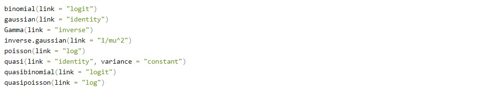
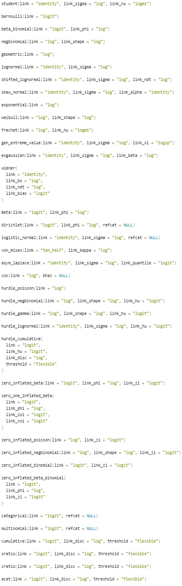
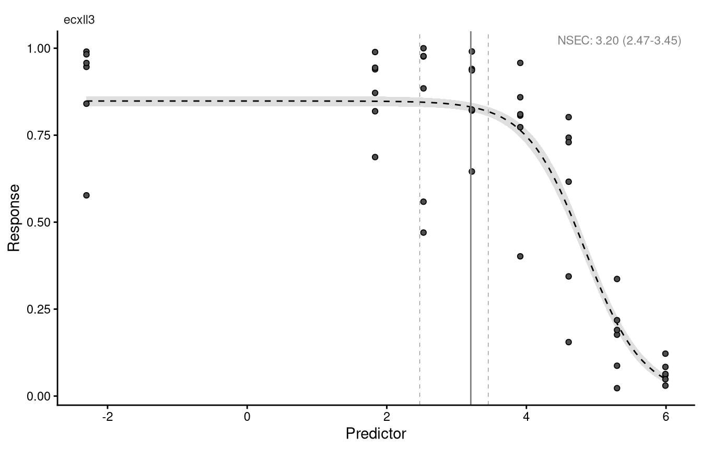
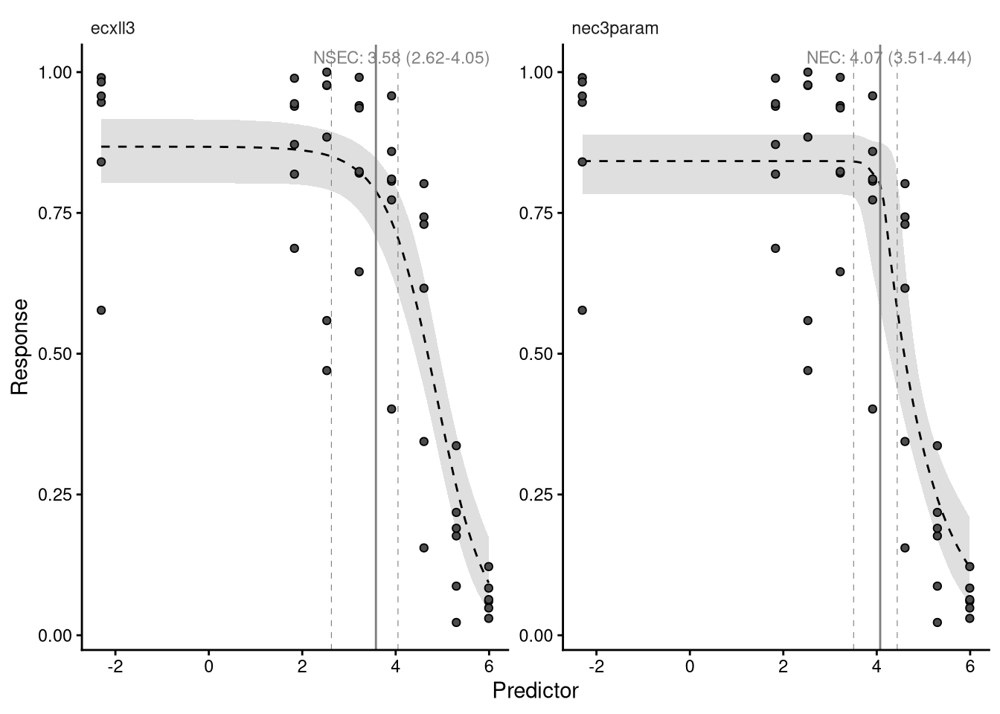
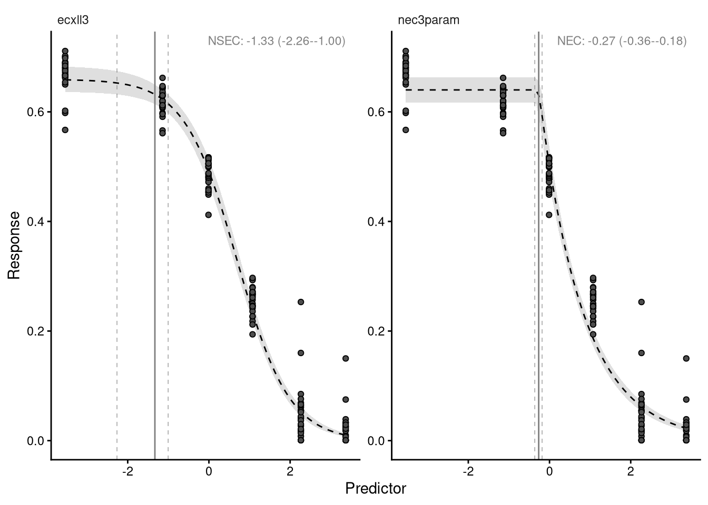
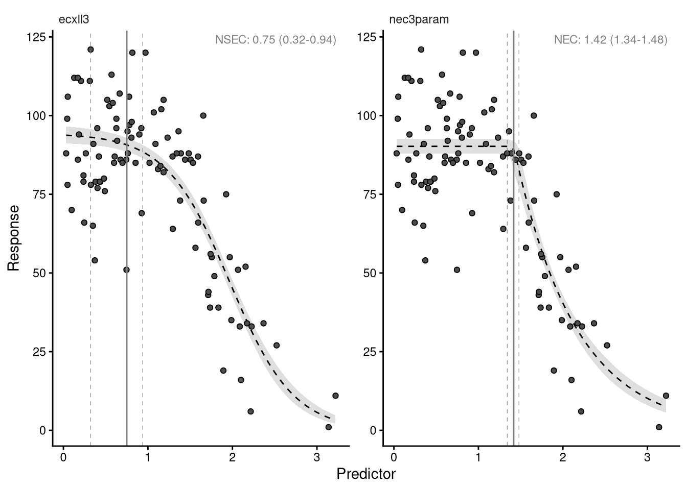
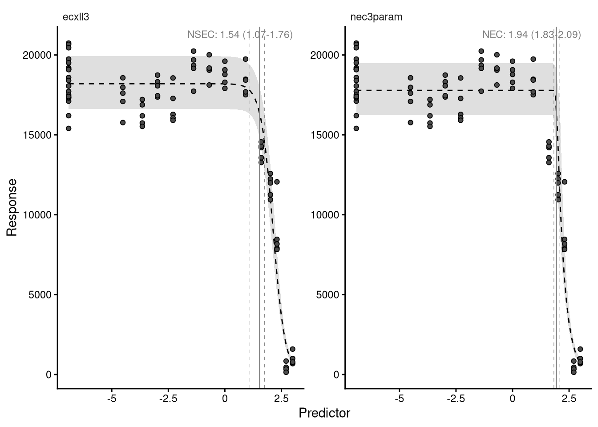
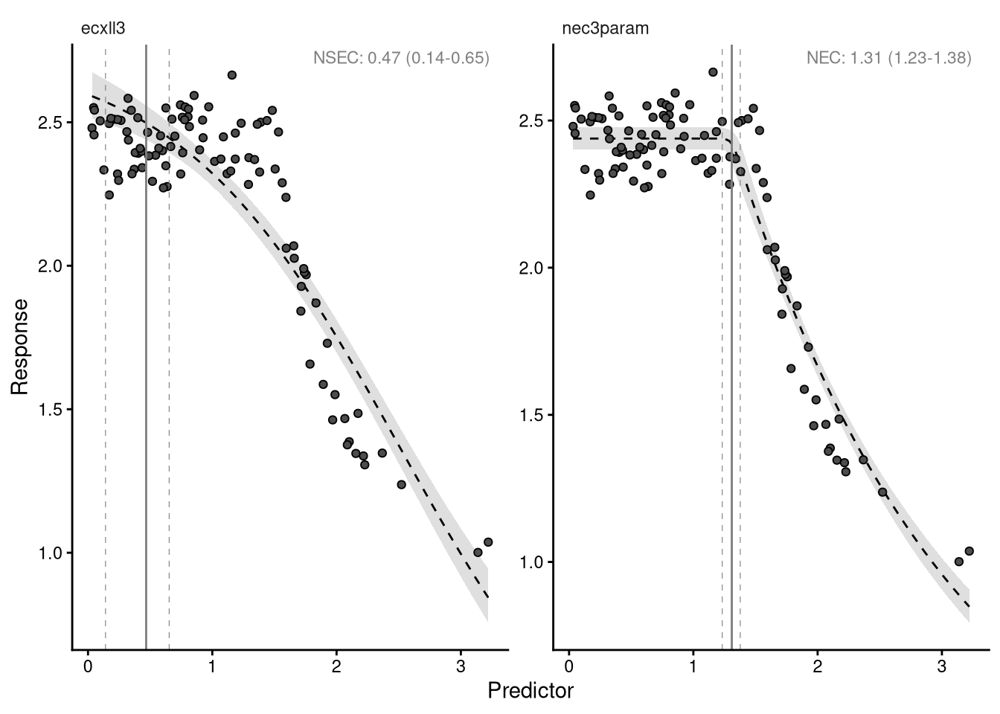

Response data and statistical distributions
Matching the statistical family to the response being modelled
Background
Concentration-response data are of varied kinds, and the measured response follows a correspondingly wide range of natural distributions. The examples below are drawn at random to show the shape of each.
Binary, modelled by the binomial or beta-binomial. Individual survival, 0 0 1 1 0 1 1 0 0 0, or counts of survivors out of a total.
Bounded continuous, modelled by the beta. Proportions or ratios that are not counts out of a total: 0.458 0.861 0.246 0.043 0.1 0.697 0.232 0.74 0.866 0.704.
Counts, modelled by the Poisson or negative binomial. Numbers of whole animals: 7 2 3 3 3 8 6 4 3 1.
Positive continuous, modelled by the gamma. Growth where shrinkage is not possible: 0.92 5.11 0.46 5.13 1.67 8.9 0.66 0.62 0.82 1.43.
Unbounded continuous, modelled by the Gaussian. Growth where shrinkage is possible: 0.08 -0.22 -0.94 0.04 -0.12 0.16 -0.8 -0.09 0.88 0.06.
Generalised modelling
Generalised modelling fits data with a statistical distribution matched to the natural range and scaling of the response, rather than assuming one.
Fitting a linear model with lm() assumes a Gaussian distribution, and so do many non-linear routines such as nls(). The normality assumption familiar from analysis of variance is the most common case of non-generalised modelling. It is sometimes reasonable, but it was adopted largely because it makes the mathematics of fitting and interval estimation tractable.
That constraint no longer applies. Matching the response to an appropriate statistical family is now standard practice, and the theory is covered well elsewhere; this module is concerned with making the right choice in bayesnec rather than with the underlying mathematics.
Families available in brms
brms supports many families, including most of those in the base stats package that other R fitting routines use:

and a number that are specific to it:

Link functions
Every statistical family has a link function. A generalised linear model relates the linear predictor to the response through it — a logit link, for example, maps the probabilities of a binary response onto an unbounded continuous scale. Generalised linear models were formulated by Nelder and Wedderburn as a unification of linear regression, logistic regression and Poisson regression, with maximum likelihood estimation of the parameters. Logistic regression is the familiar case.
The native link for a family — logit for the binomial, log for the Poisson — imposes a non-linear transformation. Concentration-response models are already non-linear and do not use linear predictors, so any further non-linearity from a link changes the model being fitted.
bayesnec therefore uses the identity link for every family. The Bayesian machinery makes this possible, because the parameters can be estimated without mapping the response onto an unbounded scale. It keeps top, bot and nec on the scale of the response, where they are directly interpretable.
bayesnec:::supported_links()[1] "identity" "log" "logit" This matters when comparing a bayesnec fit against a brms model written by hand. brms defaults to logit for a beta response and log for a Poisson, so unless the link is passed explicitly the two are different models. ECx and NSEC estimates from a fit using any link other than the identity may not behave as expected.
Families implemented in bayesnec
names(bayesnec:::mod_fams) [1] "gaussian" "Gamma"
[3] "poisson" "negbinomial"
[5] "bernoulli" "binomial"
[7] "beta_binomial" "beta"
[9] "hurdle_gamma" "zero_inflated_beta"
[11] "zero_inflated_poisson" "zero_inflated_negbinomial"The first eight are the ordinary cases covered below. hurdle_gamma, zero_inflated_beta, zero_inflated_poisson and zero_inflated_negbinomial handle responses with an excess of zeros — a separate topic, treated in the bayesnec article on hurdle families.
Adding a family is not trivial, because bayesnec generates priors and initial values by algorithms specific to each one. Requests go to the issue tracker.
Default behaviour
With default settings bnec infers the most likely distribution from the response. That inference must be checked rather than trusted. Two questions decide whether a distribution is adequate:
- does it capture the variability actually present in the data?
- does it produce sensibly shaped credible bounds across the whole curve?
Getting the dispersion right matters directly for toxicity estimates, because it sets the width of their intervals. It matters most for the NSEC, which is defined against the estimated variability in the control: overstate that variability and the estimate becomes less conservative (Fisher et al. 2023; Fisher and Fox 2023).
The sections below fit a threshold and a smooth model to each of several response types. Several of the examples come from Gerard Ricardo’s repository.
Binomial
A response is binomial when it is a count out of a total, such as the number of survivors out of a number exposed.
binom_data <- read.csv("example_binomial.csv")
summary(binom_data$raw_x) Min. 1st Qu. Median Mean 3rd Qu. Max.
0.10 10.94 37.50 99.23 125.00 400.00 head(binom_data) raw_x suc tot
1 0.1 101 175
2 0.1 106 112
3 0.1 102 103
4 0.1 112 114
5 0.1 58 69
6 0.1 158 165The predictor runs from 0.1 to 400 and is strongly right skewed, which is typical of a dilution series. Transforming the predictor, usually by a logarithm, often makes fitting more stable, and the design is generally logarithmic in any case. This example uses the predictor untransformed.
suc holds the number of successes and tot the number of trials.
For a binomial or beta-binomial response the formula takes a trials term, exactly as in brms:
suc | trials(tot) ~ crf(raw_x, model = "your_model")The column to the left of the | holds the successes — survivors, fertilised eggs — and the one inside trials() the total associated with each. The names are whatever they are in your data frame.
set.seed(333)
exp_1nec <- bnec(suc | trials(tot) ~ crf(raw_x, model = "nec3param"),
data = binom_data)Finding initial values which allow the response to be fitted using a nec3param model and a binomial distribution.Compiling Stan program...Start samplingResponse variable modelled as a nec3param model using a binomial distribution.Warning: Found 2 observations with a pareto_k > 0.7 in model 'nec3param'. We
recommend to set 'moment_match = TRUE' in order to perform moment matching for
problematic observations.Warning:
23 (47.9%) p_waic estimates greater than 0.4. We recommend trying loo instead.autoplot(exp_1nec)Setting all 'trials' variables to 1 by default if not specified otherwise.Ignoring unknown labels:
• fill : "NA"
• colour : "NA"
The credible bounds are very tight. The threshold model itself fits reasonably and the NEC is in a plausible place.
Fitting a smooth curve to the same data instead:
set.seed(333)
exp_1ecx <- bnec(suc | trials(tot) ~ crf(raw_x, model = "ecxll3"),
data = binom_data)Finding initial values which allow the response to be fitted using a ecxll3 model and a binomial distribution.Compiling Stan program...Start samplingWarning: There were 1 divergent transitions after warmup. See
https://mc-stan.org/misc/warnings.html#divergent-transitions-after-warmup
to find out why this is a problem and how to eliminate them.Warning: Examine the pairs() plot to diagnose sampling problemsResponse variable modelled as a ecxll3 model using a binomial distribution.Warning: Found 1 observations with a pareto_k > 0.7 in model 'ecxll3'. We
recommend to set 'moment_match = TRUE' in order to perform moment matching for
problematic observations.Warning:
22 (45.8%) p_waic estimates greater than 0.4. We recommend trying loo instead.The fitted ecxll3 curve does not fall to the control's 0.01 quantile within the predictor range for 79 of 8000 draws. Those draws are excluded from the NSEC summary, which is therefore censored above the highest concentration tested.autoplot(exp_1ecx)Setting all 'trials' variables to 1 by default if not specified otherwise.Ignoring unknown labels:
• fill : "NA"
• colour : "NA"
Beta-binomial
The bounds above are implausibly narrow for data of this kind. A binomial distribution has a single parameter, so its variance is fixed by its mean. Real counts out of a total are usually more variable than that, because the individuals within a replicate are not independent — a batch of eggs shares a parent, a container shares its conditions. This is over-dispersion.
The beta-binomial adds a second parameter and estimates the extra variation rather than assuming it away.
set.seed(333)
exp_1b <- bnec(suc | trials(tot) ~ crf(raw_x, model = c("ecxll3", "nec3param")),
data = binom_data, family = "beta_binomial")Finding initial values which allow the response to be fitted using a ecxll3 model and a beta_binomial distribution.Compiling Stan program...Start samplingResponse variable modelled as a ecxll3 model using a beta_binomial distribution.Finding initial values which allow the response to be fitted using a nec3param model and a beta_binomial distribution.Compiling Stan program...Start samplingResponse variable modelled as a nec3param model using a beta_binomial distribution.Fitted models are: ecxll3 nec3paramWarning:
1 (2.1%) p_waic estimates greater than 0.4. We recommend trying loo instead.The fitted ecxll3 curve does not fall to the control's 0.01 quantile within the predictor range for 80 of 8000 draws. Those draws are excluded from the NSEC summary, which is therefore censored above the highest concentration tested.The control group's observed and simulated response differ by more than 15% for: ecxll3, nec3param.
nsec() reads its reference from the control, so this is the region most likely to move a reported no-effect concentration.
See check_fit() for the per-group table. This is a modelling result, not a fault.autoplot(exp_1b, all_models = TRUE)Setting all 'trials' variables to 1 by default if not specified otherwise.Ignoring unknown labels:
• fill : "NA"
• colour : "NA"
Setting all 'trials' variables to 1 by default if not specified otherwise.
Ignoring unknown labels:
• fill : "NA"
• colour : "NA"
The bounds are now much wider, and they are a better description of the scatter in the data.
bayesnec once supplied this as a custom family called beta_binomial2, because brms did not provide one natively. It does now, and the family is named beta_binomial; code written against beta_binomial2 will no longer run.
Beta
A response bounded between 0 and 1 that is not a count out of a total is modelled by the beta distribution. Maximum quantum yield from PAM fluorometry is a common example in coral work: a proportion of light used in photosynthesis, with no underlying trials to count.
prop_data <- read.csv("example_proportion.csv") |>
mutate(sqrt.x = sqrt(raw_x))set.seed(333)
exp_2 <- bnec(resp ~ crf(sqrt.x, model = c("ecxll3", "nec3param")),
data = prop_data)Finding initial values which allow the response to be fitted using a ecxll3 model and a beta distribution.Compiling Stan program...Start samplingWarning: There were 157 divergent transitions after warmup. See
https://mc-stan.org/misc/warnings.html#divergent-transitions-after-warmup
to find out why this is a problem and how to eliminate them.Warning: Examine the pairs() plot to diagnose sampling problemsWarning: The largest R-hat is 1.05, indicating chains have not mixed.
Running the chains for more iterations may help. See
https://mc-stan.org/misc/warnings.html#r-hatWarning: Bulk Effective Samples Size (ESS) is too low, indicating posterior means and medians may be unreliable.
Running the chains for more iterations may help. See
https://mc-stan.org/misc/warnings.html#bulk-essWarning: Tail Effective Samples Size (ESS) is too low, indicating posterior variances and tail quantiles may be unreliable.
Running the chains for more iterations may help. See
https://mc-stan.org/misc/warnings.html#tail-essResponse variable modelled as a ecxll3 model using a beta distribution.Finding initial values which allow the response to be fitted using a nec3param model and a beta distribution.Compiling Stan program...Start sampling4: Response variable modelled as a nec3param model using a beta distribution.Fitted models are: ecxll3 nec3paramWarning:
1 (0.6%) p_waic estimates greater than 0.4. We recommend trying loo instead.The fitted ecxll3 curve does not fall to the control's 0.01 quantile within the predictor range for 80 of 8000 draws. Those draws are excluded from the NSEC summary, which is therefore censored above the highest concentration tested.Warning:
1 (0.6%) p_waic estimates greater than 0.4. We recommend trying loo instead.The control group's observed and simulated response differ by more than 15% for: ecxll3, nec3param.
nsec() reads its reference from the control, so this is the region most likely to move a reported no-effect concentration.
See check_fit() for the per-group table. This is a modelling result, not a fault.autoplot(exp_2, all_models = TRUE)Ignoring unknown labels:
• fill : "NA"
• colour : "NA"
Ignoring unknown labels:
• fill : "NA"
• colour : "NA"
exp_2$mod_stats model waic wi dispersion_Estimate dispersion_Q2.5
ecxll3 ecxll3 -412.4089 0.02275017 NA NA
nec3param nec3param -423.8700 0.97724983 NA NA
dispersion_Q97.5 dispersion_P_over_1
ecxll3 NA NA
nec3param NA NAThe beta has two parameters, so it can generally accommodate the variance in the data, and these bounds are reasonable. The threshold model takes most of the weight here and describes the data much better than the three-parameter log-logistic.
Note that the predictor was square-root transformed in the formula. Estimates returned by nec(), nsec() and ecx() are then on the transformed scale, and must be back-transformed with the xform argument to be read as concentrations.
Poisson
Counts of whole things — individuals, cells — are theoretically Poisson distributed: integers from zero upwards. This example builds over-dispersed counts from the package’s example data, in order to show what the negative binomial is for. Real count data are sometimes genuinely Poisson, so check before assuming otherwise.
set.seed(333)
data(nec_data)
count_data <- nec_data |>
mutate(
y = (y * 100 + rnorm(nrow(nec_data), 0, 15)) |>
round() |> as.integer() |> abs()
)
str(count_data)'data.frame': 100 obs. of 2 variables:
$ x: num 1.019 0.816 0.371 0.401 1.295 ...
$ y: int 85 120 54 96 64 88 111 92 99 86 ...set.seed(333)
exp_3 <- bnec(y ~ crf(x, model = c("ecxll3", "nec3param")), data = count_data)Finding initial values which allow the response to be fitted using a ecxll3 model and a poisson distribution.Compiling Stan program...Start samplingResponse variable modelled as a ecxll3 model using a poisson distribution.Finding initial values which allow the response to be fitted using a nec3param model and a poisson distribution.Compiling Stan program...Start samplingResponse variable modelled as a nec3param model using a poisson distribution.Fitted models are: ecxll3 nec3paramWarning:
9 (9.0%) p_waic estimates greater than 0.4. We recommend trying loo instead.The fitted ecxll3 curve does not fall to the control's 0.01 quantile within the predictor range for 80 of 8000 draws. Those draws are excluded from the NSEC summary, which is therefore censored above the highest concentration tested.Warning:
7 (7.0%) p_waic estimates greater than 0.4. We recommend trying loo instead.The control group's observed and simulated response differ by more than 15% for: ecxll3, nec3param.
nsec() reads its reference from the control, so this is the region most likely to move a reported no-effect concentration.
See check_fit() for the per-group table. This is a modelling result, not a fault.autoplot(exp_3, all_models = TRUE)Ignoring unknown labels:
• fill : "NA"
• colour : "NA"
Ignoring unknown labels:
• fill : "NA"
• colour : "NA"
Negative binomial
The Poisson has one parameter, so like the binomial its variance is determined by its mean. Counts that are more variable than that need the negative binomial, which estimates the additional variation.
set.seed(333)
exp_3b <- bnec(y ~ crf(x, model = c("ecxll3", "nec3param")),
data = count_data, family = "negbinomial")Finding initial values which allow the response to be fitted using a ecxll3 model and a negbinomial distribution.Compiling Stan program...Start samplingResponse variable modelled as a ecxll3 model using a negbinomial distribution.Finding initial values which allow the response to be fitted using a nec3param model and a negbinomial distribution.Compiling Stan program...Start samplingResponse variable modelled as a nec3param model using a negbinomial distribution.Fitted models are: ecxll3 nec3paramWarning: Found 1 observations with a pareto_k > 0.7 in model 'ecxll3'. We
recommend to set 'moment_match = TRUE' in order to perform moment matching for
problematic observations.Warning:
5 (5.0%) p_waic estimates greater than 0.4. We recommend trying loo instead.The fitted ecxll3 curve does not fall to the control's 0.01 quantile within the predictor range for 80 of 8000 draws. Those draws are excluded from the NSEC summary, which is therefore censored above the highest concentration tested.Warning:
4 (4.0%) p_waic estimates greater than 0.4. We recommend trying loo instead.The control group's observed and simulated response differ by more than 15% for: ecxll3, nec3param.
nsec() reads its reference from the control, so this is the region most likely to move a reported no-effect concentration.
See check_fit() for the per-group table. This is a modelling result, not a fault.autoplot(exp_3b, all_models = TRUE)Ignoring unknown labels:
• fill : "NA"
• colour : "NA"
Ignoring unknown labels:
• fill : "NA"
• colour : "NA"
The bounds widen, as they did for the beta-binomial, and for the same reason.
Gamma
A continuous response that cannot be negative — a length, a mass, a rate where shrinkage is impossible — is modelled by the gamma.
data(nec_data)
measure_data <- nec_data |>
mutate(measure = exp(y))set.seed(333)
exp_4 <- bnec(measure ~ crf(x, model = c("ecxll3", "nec3param")),
data = measure_data)Finding initial values which allow the response to be fitted using a ecxll3 model and a Gamma distribution.Compiling Stan program...Start samplingResponse variable modelled as a ecxll3 model using a Gamma distribution.Finding initial values which allow the response to be fitted using a nec3param model and a Gamma distribution.Compiling Stan program...Start samplingResponse variable modelled as a nec3param model using a Gamma distribution.Fitted models are: ecxll3 nec3paramWarning: Found 1 observations with a pareto_k > 0.7 in model 'ecxll3'. We
recommend to set 'moment_match = TRUE' in order to perform moment matching for
problematic observations.Warning:
2 (2.0%) p_waic estimates greater than 0.4. We recommend trying loo instead.The fitted ecxll3 curve does not fall to the control's 0.01 quantile within the predictor range for 80 of 8000 draws. Those draws are excluded from the NSEC summary, which is therefore censored above the highest concentration tested.Warning: Found 1 observations with a pareto_k > 0.7 in model 'nec3param'. We
recommend to set 'moment_match = TRUE' in order to perform moment matching for
problematic observations.Warning:
3 (3.0%) p_waic estimates greater than 0.4. We recommend trying loo instead.The control group's observed and simulated response differ by more than 15% for: ecxll3, nec3param.
nsec() reads its reference from the control, so this is the region most likely to move a reported no-effect concentration.
See check_fit() for the per-group table. This is a modelling result, not a fault.autoplot(exp_4, all_models = TRUE)Ignoring unknown labels:
• fill : "NA"
• colour : "NA"
Ignoring unknown labels:
• fill : "NA"
• colour : "NA"
Gaussian
A continuous response that can take negative values is modelled by the Gaussian. Growth rates are the usual case, where an organism may shrink, and so are responses that have been transformed onto an unbounded scale. Here the proportion data above are put on a logit scale.
gaussian_data <- prop_data |>
mutate(y = car::logit(resp))set.seed(333)
exp_5 <- bnec(y ~ crf(sqrt.x, model = c("ecxll4", "nec4param")),
data = gaussian_data)Finding initial values which allow the response to be fitted using a ecxll4 model and a gaussian distribution.Compiling Stan program...Start samplingWarning: There were 10 divergent transitions after warmup. See
https://mc-stan.org/misc/warnings.html#divergent-transitions-after-warmup
to find out why this is a problem and how to eliminate them.Warning: Examine the pairs() plot to diagnose sampling problemsResponse variable modelled as a ecxll4 model using a gaussian distribution.Finding initial values which allow the response to be fitted using a nec4param model and a gaussian distribution.Compiling Stan program...Start samplingWarning: There were 3 divergent transitions after warmup. See
https://mc-stan.org/misc/warnings.html#divergent-transitions-after-warmup
to find out why this is a problem and how to eliminate them.
Warning: Examine the pairs() plot to diagnose sampling problemsResponse variable modelled as a nec4param model using a gaussian distribution.Fitted models are: ecxll4 nec4paramWarning:
4 (2.5%) p_waic estimates greater than 0.4. We recommend trying loo instead.The fitted ecxll4 curve does not fall to the control's 0.01 quantile within the predictor range for 80 of 8000 draws. Those draws are excluded from the NSEC summary, which is therefore censored above the highest concentration tested.Warning:
4 (2.5%) p_waic estimates greater than 0.4. We recommend trying loo instead.The control group's observed and simulated response differ by more than 15% for: ecxll4, nec4param.
nsec() reads its reference from the control, so this is the region most likely to move a reported no-effect concentration.
See check_fit() for the per-group table. This is a modelling result, not a fault.autoplot(exp_5, all_models = TRUE)Ignoring unknown labels:
• fill : "NA"
• colour : "NA"
Ignoring unknown labels:
• fill : "NA"
• colour : "NA"
Transforming a bounded response onto an unbounded scale and modelling it as Gaussian is one way of handling proportion data, and it was standard practice before generalised methods were routine. Modelling the response on its own scale with the beta, as above, is preferable: it keeps the parameters interpretable as proportions, and it does not require the transformation to have made the variance constant.
Model suitability by response type
Not every equation suits every family. A model predicting negative values cannot be used with a response that must be positive, and bayesnec discards any model in a requested set that is unsuitable for the distribution of the response. This is why a set of twenty-three may return fewer than twenty-three fits, and why the zero_bounded set exists.
Open questions
The families implemented in bayesnec cover the common cases in concentration-response work. Responses with an excess of zeros need the hurdle and zero-inflated families listed above, which are covered separately.
The important practical point is the one at the top of this module: check which distribution was used, and check that it reproduces the variability in the data. The default inference is a convenience, not a substitute for that judgement.
References
Fisher, Rebecca, and David R. Fox. 2023. “Introducing the No-Significant-Effect Concentration.” Environmental Toxicology and Chemistry n/a (n/a). https://doi.org/https://doi.org/10.1002/etc.5610.
Fisher, Rebecca, David R. Fox, Andrew P. Negri, Joost van Dam, Florita Flores, and Darren Koppel. 2023. “Methods for Estimating No-Effect Toxicity Concentrations in Ecotoxicology.” Integrated Environmental Assessment and Management, ahead of print. https://doi.org/https://doi.org/10.1002/ieam.4809.